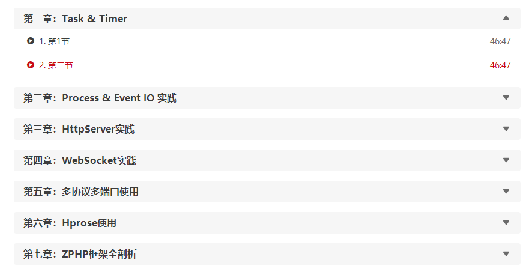
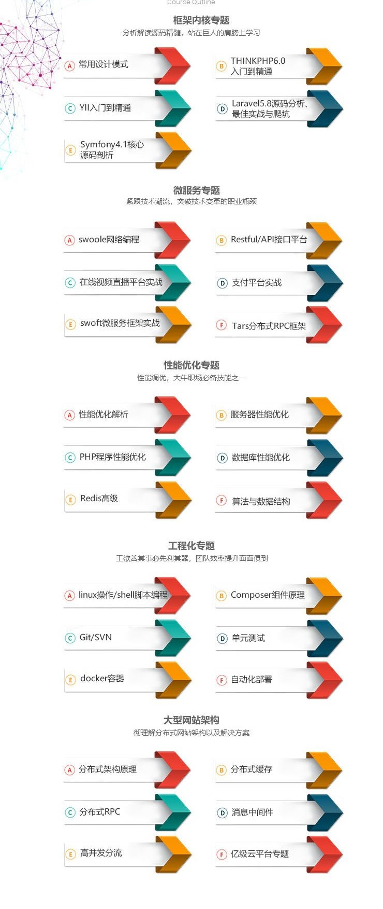

依赖注入
当A类需要依赖于B类，也就是说需要在A类中实例化B类的对象来使用时候，如果B类中的功能发生改变，也会导致A类中使用B类的地方也要跟着修改，导致A类与B类高耦合。这个时候解决方式是，A类应该去依赖B类的接口，把具体的类的实例化交给外部。
就拿我们业务中常用的通知模块来说。
|
1 2 3 4 5 6 7 8 9 10 11 12 13 14 15 16 17 18 19 20 21 22 23 24 25 26 27 |
|
上面的代码是我们传统的写法。首先由个消息发送的类。然后在我们需要发送消息的地方，调用发送消息的接口。有一天你需要添加一个发送短信的接口以满足不同的需求。那么你会发现你要再Message类里面做修改。同样也要再Order类里面做修改。这样就显得很麻烦。这个时候就有了依赖注入的思路。下面把代码做一个调整
|
1 2 3 4 5 6 7 8 9 10 11 12 13 14 15 16 17 18 19 20 21 22 23 24 25 26 27 28 29 30 31 32 33 34 35 36 37 38 39 40 41 42 43 44 45 46 47 48 49 50 51 52 53 54 55 |
|
这样我们就实现了依赖注入的思路,是不是很方便扩展了。
服务容器
我理解的服务容器就是一个自动产生类的工厂。
|
1 2 3 4 5 6 7 8 9 10 11 12 13 14 15 16 17 18 19 20 21 22 23 24 25 26 27 28 29 30 31 32 33 34 35 36 37 38 39 40 41 42 43 44 45 46 47 48 49 50 51 52 53 54 55 56 57 58 59 60 61 62 63 64 65 66 67 68 69 70 |
|
container是一个简单的服务容器里面有bind,make两个方法
bind是向容器中绑定服务对象。make则是从容器中取出对象。
bind
在bind方法中需要传入一个 concrete 我们可以传入一个实例对象或者是一个闭包函数。
可以看到我这全使用的是闭包函数，其实也可以这样写
|
1 2 |
|
后面这种写法与闭包相比的区别就是我们需要先实例化对象才能往容易中绑定服务。而闭包则是我们使用这个服务的时候才去实例化对象。可以看出闭包是有很多的优势的。
make
make方法就从容器中出去方法。里面首先判断了instances变量中是否有当前以及存在的服务对象，如果有直接返回。如果没有那么会通过 call_user_func_array返回一个对象.

明确的学习思路能更高效化的学习
